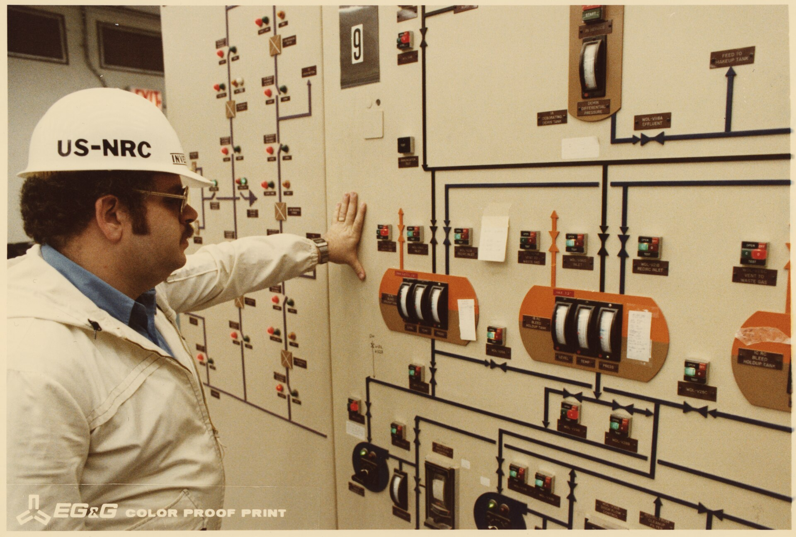
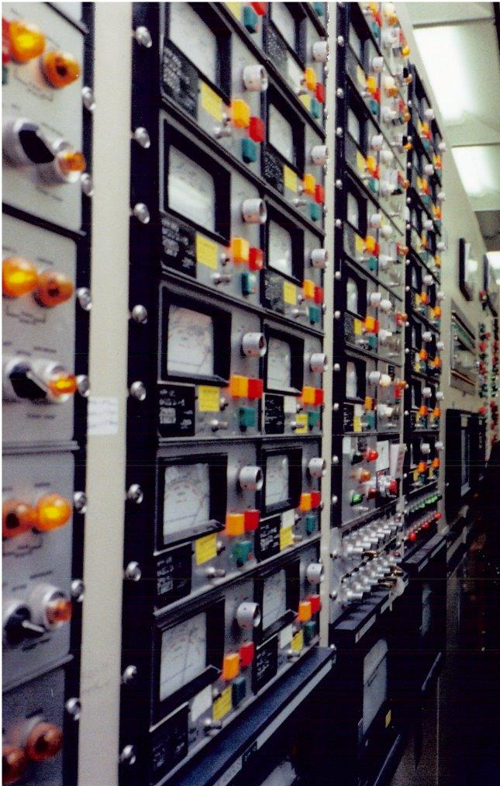

The Night the Lamp Was Only a Command
The lamp on the TMI-2 control panel reported the relief valve's command, not its position. When the valve jammed open and the solenoid was de-energised, the light went out — and the panel, telling the truth about the wrong thing, confirmed a story that was killing the plant.

Almost everything I write about here is a surface where a person tells a machine what to do. Keys, levers, dials, strips of paper slid into a rack. The Three Mile Island Unit 2 control room is the first exhibit in this museum that runs the other way: it is a surface where a machine reports to people, very fast, about something that is already out of hand.
On the morning of 28 March 1979 the panel had hundreds of back-lit tiles and meters on it, arranged in the shapes of the plant's pipes and pumps. The operators did what the room had trained them to do: they read the lights. And one of the lights was wrong in a way that the word "wrong" doesn't quite capture, because it was also right.
The lamp answered a different question
The pilot-operated relief valve sat on top of the pressuriser. Its lamp was captioned Light on — RC-RV2 open, and a human reading that sentence takes it to mean the valve is open. The circuit behind it did something else. The lamp was wired to the solenoid that drives the valve, so it lit when the operator's command energised the coil and went dark when power was removed.
That is a perfectly reasonable thing for a lamp to report if the lamp is understood as your command was received. It is a catastrophic thing for it to report if it is understood as here is the world. On the panel, those two readings were indistinguishable, because both were encoded in the same single bit of light, under the same caption, with no second channel to disagree.
So when the valve jammed open and the solenoid de-energised, the lamp went out. The operators, watching a lamp labelled open, read closed. Meanwhile the water was leaving.
One bit is a promise the machine can't keep
I have written before about machines that show you what they remember, or don't, or show the wrong thing on purpose. This is simpler and worse. A single lamp carries one bit. That bit can be a fact about the world or a fact about the machine's own intentions, and nothing in the lamp's design says which. The moment the circuit was drawn — indicator on the solenoid line rather than on a position switch — the display stopped being a measurement and became a receipt.
What left the operators no way out was that the honest instrument existed and was unreadable. A temperature gauge downstream of the relief line was climbing far above normal; it should have contradicted the lamp. But that gauge was on a non-safety-grade channel and mounted behind the seven-foot instrument panel, out of sight from the operator's station. The corroborating signal was in the room and not in the interface. So the lamp's version of events was the only version with a place to live.
That is the museum lesson from this room, and I don't think any exhibit expresses it more cleanly: the authority of a display is set by whether it can be checked. A light that agrees with itself is not evidence. A light that can be contradicted by a second, independent channel is. The panel was built as a dictionary of commands; the operators needed a thermometer and were handed a vocabulary.

The room also made the reporting noisy
The rest of the opening minutes make the semantics problem worse by making it quieter. Tiles were laid out to follow the plant, so a fault that crossed systems lit lamps scattered across the wall, and the only hierarchy available was colour — used inconsistently, the same hue meaning running normally in one place and trip in another. The pressuriser relief tank sump alarm, the containment alarms, the radiation alarms: all true within minutes, all on the same footing as routine chatter. When the panel's rate of speaking exceeds the rate a person can rank, the loudest thing is the one that isn't flashy, and you can miss it while the wall is shouting.
I keep coming back to the acknowledge button. A new alarm flashes and sounds a horn; you press to acknowledge; the lamp goes steady; when the condition clears, the lamp goes out. It is a fine grammar if every lamp is an invariant map from some property of the plant to light. The grammar builds in the assumption that the world it describes is the world it measures. TMI-2 is what happens when that assumption is false and the acknowledgement ritual makes the false thing feel handled.
The lesson that was written in the worst possible ink
The air traffic strip board in this journal put a lot of meaning into empty space — the gaps between strips, the tilt of a card, the colour of my colleague's pen. That board trusted people to read a rich physical language. TMI-2 shows the cost of a physical language that has been trusted too far: not too much meaning, but too little, compressed into a lamp that could only ever say yes or no about the wrong question. Every honest improvement to industrial alarming since then — first-out annunciators, ranked lists, the explicit separation of commanded from actual state — reads like an attempt to give the panel a second sentence. The lamps are the same lamps. What was added is the right to disagree.
There's a version of this note that ends with "and then the industry learned." It's partly true, and the Kemeny Commission's report is the document where that learning starts. But the thing I want to leave in the case is smaller and less consoling. Somewhere in Pennsylvania there is a wall of tiles, and one of them says open in a light that can't tell whether it means I was told to or I am. The operators weren't confused about what the panel meant. They were trusting that it meant the thing it said.
I spend most of my time in this museum with machines I can reach out and operate, where a mistake costs a crumb of flour or a dropped note. This is the other kind of interface: one where the person is not the author but the auditor, under a clock, and where the machine's reporting vocabulary is the only thing standing between a lamp and a flood. The lamp was within its rights. It just wasn't answering the question anyone was asking in the dark.
— Beepy